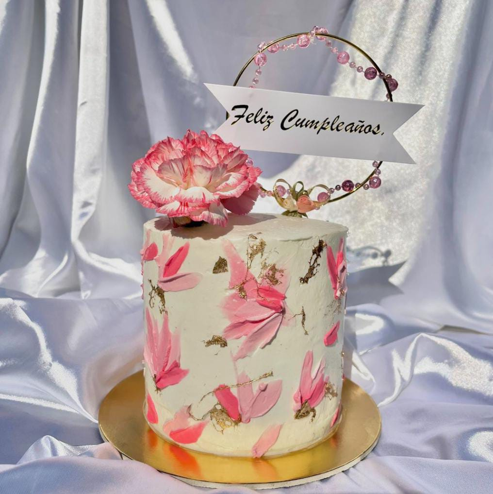
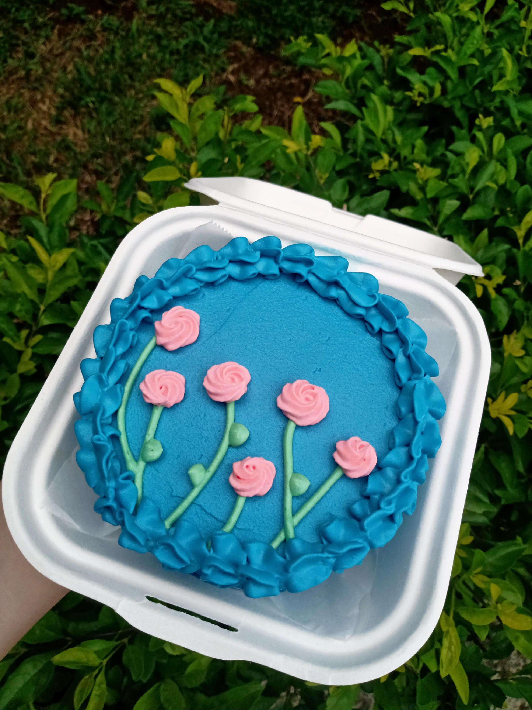
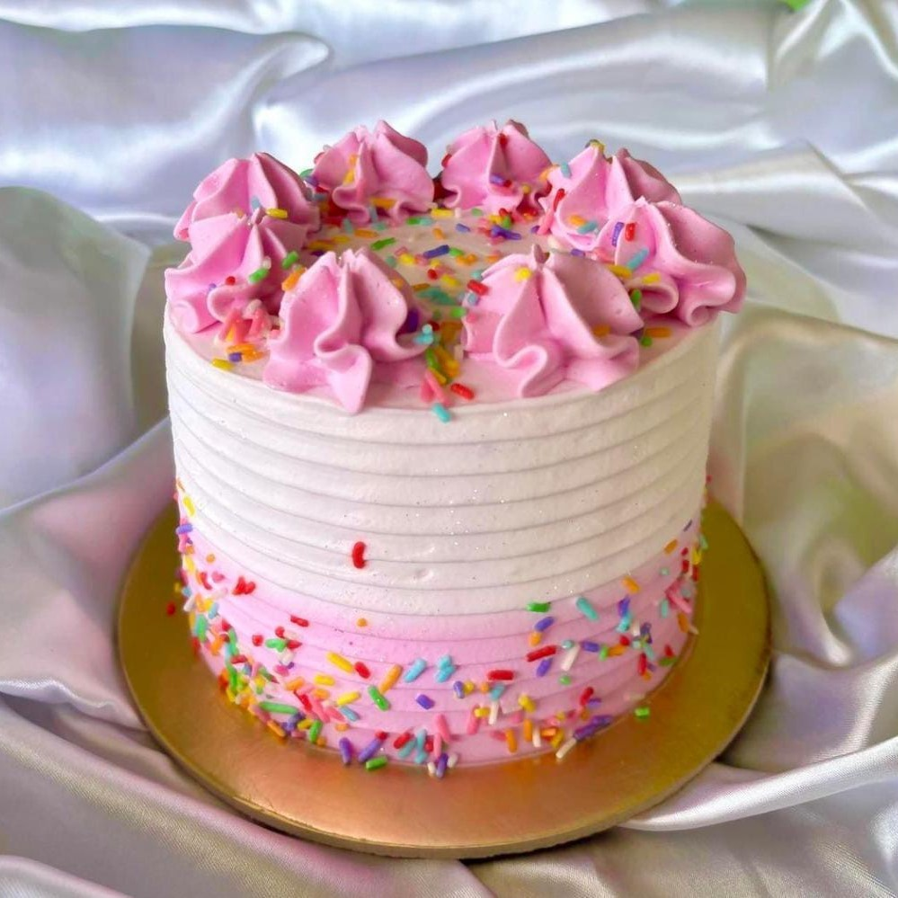

Pastel en forma de corazón
Desde inicio de año este estilo de pastel de figuraba como uno de los principales diseños 2024. Su figura de corazón llama la atención en redes sociales y tiene su propio trend.

¡El 2024 va a ser un año increíble para la pastelería! Descubre las últimas tendencias en pasteles y aprende lo último con NAMURA. Explora lo que este año tiene reservado para ti y tu pasión por la pastelería, solo aquí.
Desde inicio de año este estilo de pastel de figuraba como uno de los principales diseños 2024. Su figura de corazón llama la atención en redes sociales y tiene su propio trend.
El marmoleado nunca pasa de moda, y tiene muchísimos diseños que puedes explorar y muchos colores con los que se puede combinar.
Los mini cakes son una tendencia que vino para quedarse. Su versatilidad hace que sean los más buscados para cumpleaños entre amigos o reuniones donde se necesita un postre especial.
Los sprinkles siempre se van a mantener en tendencia, porque tiende a realzar los pasteles. No hay nada como ver un pastel colorido y dulce con muchos de estos.
